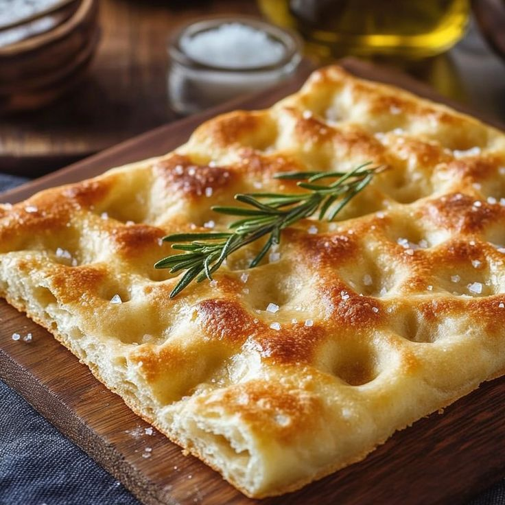

Ricette Salate
In questa sezione troverai tutte le ricette salate tipiche delle regioni italiane, dai piatti di pasta alle pizze, ideali per pranzi e cene gustose.
Lombardia -Il Risotto allo zafferano-
Ingredienti:
-Riso Carnaroli 320 g
-Zafferano (2 bustine da 0,15 g cad) 0,3 g
-Midollo 50 g
-Cipolle ½
-Burro 40 g
-Vino bianco 50 g
-Sale fino(bollente) q.b.
-Pepe nero q.b.
Per il brodo:
-Manzo ossi 600 g
-Carote 1
-Sedano 1
-Cipolle ½
-Acqua 1,5 l
Per mantecare:
-Parmigiano Reggiano DOP (da grattugiare, freddo di frigo) 80 g
-Burro (freddo di frigo) 40 g
Preparazione:
Per preparare il risotto alla milanese iniziate dal brodo. Come prima cosa separate il midollo dalle ossa, poi mondate e tagliate le verdure grossolanamente. Scaldate un filo d’olio in una pentola capiente e aggiungete gli ossi e tostateli per 3-4 minuti a fuoco medio-alto, poi unite le verdure. Rosolate per altri 3-4 minuti, poi coprite con l’acqua. Portate a bollore, poi coprite con il coperchio e lasciate sobbollire a fuoco medio-basso per circa 2 ore.
Quando il brodo sarà pronto, occupatevi del risotto: in un ampio tegame mettete il burro e il midollo. Mescolate a fuoco basso per farlo sciogliere. Una volta sciolto aggiungete la cipoll e lasciatela stufare, poi versate il riso e tostatelo per 3-4 minuti a fuoco medio, mescolando spesso.
Quando i chicchi risulteranno caldi al tatto, sfumate con il vino e lasciate evaporare completamente la parte alcolica. A questo punto versate un mestolo di brodo caldo filtrandolo attraverso un colino e continuate a cuocere il riso in questo modo per circa 16-18 minuti, aggiungendo altro brodo man mano che verrà assorbito.
Nel frattempo sciogliete lo zafferano in una ciotolina a parte con una piccola quantità di brodo. Quando mancheranno 5 minuti alla fine della cottura del risotto, unite lo zafferano.
Mescolate bene per amalgamarlo in modo uniforme, poi spegnete il fuoco e mantecate con il burro freddo e il Parmigiano Reggiano grattugiato. Aggiungete un altro goccio di brodo e mescolate bene, dopodiché potete impiattare. Il vostro risotto alla milanese è pronto per essere servito!

Liguria -La Focaccia-
Ingredienti:
-Farina 00 (W=280) 400 g
-Farina Manitoba (W=400) 250 g
-Acqua (a temperatura ambiente) 335 g
-Sale fino 13 g
-Malto 10 g
-Lievito di birra fresco 18 g
-Olio extravergine d'oliva 30 g
Per ungere le teglie
-Olio extravergine d'oliva 30 g
Per la superficie
-Olio extravergine d'oliva 60 g
Per la salamoia
-Sale 10 g
-Acqua 200 g
Preparazione:
Per preparare la focaccia genovese versate in una ciotola la farina Manitoba e la farina 00. Miscelate con una marisa, poi formate un leggero buco al centro e versate quasi tuta l'acqua. Mescolate ancora per far assorbire l'acqua, poi unite il malto e il sale tutto insieme.
Mescolate, poi versate l'acqua rimasta e lavorate ancora con la marisa fino ad ottenere una pasta omogenea. Una volta che il sale si sarà integrato alla farina potrete aggiungere il lievito di birra sbriciolato.
Ancora qualche giro di marisa e l'impasto è pronto per trasferirlo sul piano di lavoro e continuare a lavorare a mano, piuttosto energicamente. Se è rimasta un po' di farina non assorbita, non importa: si assorbirà lavorandola, facendo delle pressioni con il palmo della mano mentre impastate, proprio a "strappare l'impasto" replicando il movimento della macchina. Dopo pochi minuti, quando vedete che la maglia glutinica prende forma, quindi l'impasto risulta più omogeno e quasi elastico, versate l'olio sull'impasto.
Continuate a lavorare sul piano per far assorbire tutto l'olio sempre impastando energicamente. In base al tipo di farina utilizzato, mentre lavorate, potrebbe essere necessario spolverizzare con pochissima farina. In tutto ci vorranno 13-15 minuti, per ottenere un impasto liscio ed omogeneo. Potete coprirlo e lasciarlo riposare per qualche minuto. Quindi togliete il canovaccio.
Chiudete l'impasto roteandolo sul piano, noterete che in pochissimi secondi diventerà liscio. Dividete l'impasto in due pezzi da 500 g, date una forma rettangolare schiacciandolo con le mani e date una piega a tre. Per farlo potete ripiegare l'impasto su se stesso, portando un lembo verso l'interno e poi ripiegando ancora, lasciando una linea sotto e arrotolandolo per finire, in modo che la chiusura resti appunto a contatto con il banco di lavoro, leggermente spolverizzato con farina. Ripetete la stessa operazione anche per l'altra metà di impasto. Coprite con un panno e lasciate riposare per circa 30 minuti.
Togliete il canovaccio, prendete uno dei due panetti e mantenete l'altro coperto. Ungete la prima teglia 30x40 con 15 g di olio, senza andare negli angoli perchè ci andrà da solo. Posizionate il panetto su un piano infarinato, schiacciatelo con le dita per allargarlo, sempre utilizzando solo indice, medio e anulare quindi 3 dita della mano.
Poi passate a stendere l'impasto con un mattarello, girando l'impasto di tanto in tanto in modo da mantenere una forma rettangolare. Passate le mani sotto l'impasto, quindi giratele in modo che il dorso delle mani sollevi l'impasto per adagiarlo senza ledere la pasta sulla teglia fino a ricoprire il 70-80%. Coprite con un panno e lasciate riposare ancora per 20-30 minuti. Nel frattempo ripetete la stessa operazione per il secondo panetto di impasto.
A questo punto spolverizzate la focaccia con poca farina, schiacciate bene con la punta delle dita stendendo l'impasto su tutta la teglia, partendo dal perimetro per creare un piccolo bordo. E' importante che l'impasto aderisca bene alla teglia, in questo modo quando verserete sopra la salamoia, non finirà sul fondo. Lisciate il più possibile con il palmo delle mani la superficie, coprite di nuovo e lasciate riposare per un'ora. A questo punto preparate la salamoia mescolando insieme acqua e sale, fino a che non sarà ben sciolto.
Scoprite la focaccia, spolverizzatela con pochissima farina e con le tre dita (indice, medio anulare) imprimete i tipici buchi facendo una bella pressione e spingando verso i bordi: le dita non devono essere perpendicolari all'impasto, ma leggermente inclinate. Dovrete lasciare circa 1 cm tra un buco e l'altro. Quando avrete quasi terminato di realizzare tutti i fori, ruotate la teglia, in questo modo sarà più semplice realizzare tutti i fori anche lungo il bordo rimasto.
Ora versate al centro di ogni focaccia 30 g di olio e 90 g di salamoia. Poi spargetela delicatamente con la mano in modo da riempire tutti i buchi. Lasciate lievitare per altri 40-45 minuti, questa volta senza coprirla. Cuocete in forno statico preriscaldato a 230° per 15 minuti (se il forno è molto potente, consigliamo in caso di modificare temperatura, ma non la tempistica. E' bene non cuocere oltre i 15 minuti per non far asciugare troppo la focaccia). Quando la superficie risulterà dorata potrete sfornare la vostra focaccia! Lasciatela intiepidire pochi minuti, tagliatela e servitela!